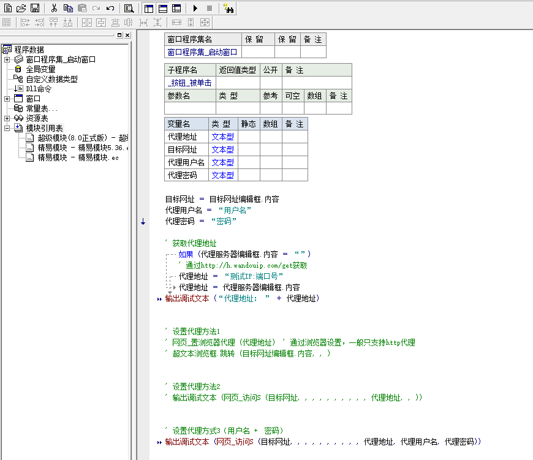

C 示例
; C 支持 http/socks5
// demo.cpp : 定义控制台应用程序的入口点。
//
#include "stdafx.h"
#include "curl/curl.h"
#pragma comment(lib, "libcurl.lib")
static size_t write_buff_data(char *buffer, size_t size, size_t nitems, void *outstream)
{
memcpy(outstream, buffer, nitems*size);
return nitems*size;
}
/*
使用http代理
*/
int GetUrlHTTP(char *url, char *buff)
{
CURL *curl;
CURLcode res;
curl = curl_easy_init();
if (curl)
{
curl_easy_setopt(curl, CURLOPT_PROXY,"http://测试ip:端口");
curl_easy_setopt(curl, CURLOPT_WRITEDATA, (void*)buff);
curl_easy_setopt(curl, CURLOPT_WRITEFUNCTION, write_buff_data);
curl_easy_setopt(curl, CURLOPT_URL, url);
curl_easy_setopt(curl, CURLOPT_LOW_SPEED_TIME, 10L);
curl_easy_setopt(curl, CURLOPT_LOW_SPEED_LIMIT, 50L);
curl_easy_setopt(curl, CURLOPT_MAX_RECV_SPEED_LARGE, 2000000L);/*下载最高速度*/
res = curl_easy_perform(curl);
curl_easy_cleanup(curl);
if (res == CURLE_OK){
return res;
}else {
printf("错误代码:%d\n", res);
MessageBox(NULL, TEXT("获取IP错误"), TEXT("助手"), MB_ICONINFORMATION | MB_YESNO);
}
}
return res;
}
/*
使用socks5代理
*/
int GetUrlSocks5(char *url, char *buff)
{
CURL *curl;
CURLcode res;
curl = curl_easy_init();
if (curl)
{
curl_easy_setopt(curl, CURLOPT_PROXY, "socks5://测试ip:端口");
curl_easy_setopt(curl, CURLOPT_WRITEDATA, (void*)buff);
curl_easy_setopt(curl, CURLOPT_WRITEFUNCTION, write_buff_data);
curl_easy_setopt(curl, CURLOPT_URL, url);
curl_easy_setopt(curl, CURLOPT_LOW_SPEED_TIME, 10L);
curl_easy_setopt(curl, CURLOPT_LOW_SPEED_LIMIT, 50L);
curl_easy_setopt(curl, CURLOPT_MAX_RECV_SPEED_LARGE, 2000000L);/*下载最高速度*/
res = curl_easy_perform(curl);
curl_easy_cleanup(curl);
if (res == CURLE_OK) {
return res;
}
else {
printf("错误代码:%d\n", res);
MessageBox(NULL, TEXT("获取IP错误"), TEXT("助手"), MB_ICONINFORMATION | MB_YESNO);
}
}
return res;
}
int GetUrl(char *url, char *buff)
{
CURL *curl;
CURLcode res;
curl = curl_easy_init();
if (curl)
{
curl_easy_setopt(curl, CURLOPT_WRITEDATA, (void*)buff);
curl_easy_setopt(curl, CURLOPT_WRITEFUNCTION, write_buff_data);
curl_easy_setopt(curl, CURLOPT_URL, url);
curl_easy_setopt(curl, CURLOPT_LOW_SPEED_TIME, 10L);
curl_easy_setopt(curl, CURLOPT_LOW_SPEED_LIMIT, 50L);
curl_easy_setopt(curl, CURLOPT_MAX_RECV_SPEED_LARGE, 2000000L);/*下载最高速度*/
res = curl_easy_perform(curl);
curl_easy_cleanup(curl);
if (res == CURLE_OK)
{
return res;
}
else {
printf("错误代码:%d\n", res);
MessageBox(NULL, TEXT("获取IP错误"), TEXT("助手"), MB_ICONINFORMATION | MB_YESNO);
}
}
return res;
}
int main()
{
char *buff=(char*)malloc(1024*1024);
memset(buff, 0, 1024 * 1024);
GetUrl("http://baidu.com", buff);
printf("不使用代理：%s\n", buff);
memset(buff, 0, 1024 * 1024);
GetUrlHTTP("http://baidu.com", buff);
printf("http结果：%s\n", buff);
memset(buff, 0,1024 * 1024);
GetUrlSocks5("http://baidu.com", buff);
printf("socks5结果：%s\n", buff);
Sleep(1000 * 1000);
free(buff);
return 0;
}
C# 示例
/**
C# 支持 http、https
*/
using System;
using System.Net;
using System.Net.Http;
using System.Collections.Generic;
namespace ClientProxyDemo
{
class TestProxy
{
static void Main(string[] args)
{
String proxyServer = "http://xxx:xxx"; // http://host:port, 例(http://1.2.3.4:7777), host可以是域名或者ip,port是代理端口号
var proxy = new WebProxy(proxyServer);
HttpClientHandler httpClientHandler = new HttpClientHandler()
{
Proxy = proxy
};
var httpCient = new HttpClient(httpClientHandler);
// 增加头部
httpCient.DefaultRequestHeaders.Add("Header-Key", "header-vaule");
TestProxy testProxy = new TestProxy();
testProxy.testGet(httpCient);
// testProxy.testPost(httpCient);
}
// 测试get请求
public void testGet(HttpClient httpClient)
{
String targetUrl = "http://httpbin.org/get";
var httpResult = httpClient.GetStringAsync(targetUrl).Result;
}
// 测试post请求
public void testPost(HttpClient httpClient)
{
String targetUrl = "http://httpbin.org/post";
List> formData = new List>();
formData.Add(new KeyValuePair("key1", "vaule1"));
formData.Add(new KeyValuePair("key2", "vaule2"));
var formContent = new FormUrlEncodedContent(formData.ToArray());
var responseMsg = httpClient.PostAsync(targetUrl, formContent).Result;
var httpResult = responseMsg.Content.ReadAsStringAsync().Result;
}
}
}
Go 示例
/**
* go 支持 http、socks5
*
*/
package main
import (
"fmt"
"io/ioutil"
"net/http"
"net/url"
)
//sock5代理
func socksproxy() {
urli := url.URL{}
urlproxy, _ := urli.Parse("http://测试ip:端口")
client := &http.Client{
Transport: &http.Transport{
Proxy: http.ProxyURL(urlproxy),
},
}
rqt, err := http.NewRequest("GET", "http://myip.top", nil)
if err != nil {
println("接口获取IP失败!")
return
}
rqt.Header.Add("User-Agent", "Lingjiang")
//处理返回结果
response, _ := client.Do(rqt)
defer response.Body.Close()
body, err := ioutil.ReadAll(response.Body)
if err != nil {
return
}
fmt.Println("socks5:", string(body))
return
}
//http代理
func httpproxy() {
urli := url.URL{}
urlproxy, _ := urli.Parse("http://测试ip:端口")
client := &http.Client{
Transport: &http.Transport{
Proxy: http.ProxyURL(urlproxy),
},
}
rqt, err := http.NewRequest("GET", "http://myip.top", nil)
if err != nil {
println("接口获取IP失败!")
return
}
rqt.Header.Add("User-Agent", "Lingjiang")
//处理返回结果
response, _ := client.Do(rqt)
defer response.Body.Close()
body, err := ioutil.ReadAll(response.Body)
if err != nil {
return
}
fmt.Println("http:", string(body))
return
}
//本机IP
func httplocal() {
client := &http.Client{}
rqt, err := http.NewRequest("GET", "http://myip.top", nil)
if err != nil {
println("接口获取IP失败!")
return
}
rqt.Header.Add("User-Agent", "Lingjiang")
//处理返回结果
response, _ := client.Do(rqt)
defer response.Body.Close()
body, err := ioutil.ReadAll(response.Body)
if err != nil {
return
}
fmt.Println("本机:", string(body))
return
}
func main() {
httplocal()
httpproxy()
socksproxy()
}
PhantomJS 示例
/**
* PhantomJS 支持 http、socks5
*
Phantomjs http/socks5:
phantomjs --proxy=ip:port --proxy-type=[http|socks5|none] demo.js
PHP 示例
/**
* PHP 支持 http、socks5
*
*/
// 要访问的目标页面
$targetUrl = "http://baidu.com";
// 代理服务器
$proxyServer = "http://ip:port";
// 隧道身份信息
$ch = curl_init();
curl_setopt($ch, CURLOPT_URL, $targetUrl);
curl_setopt($ch, CURLOPT_HTTPPROXYTUNNEL, false);
curl_setopt($ch, CURLOPT_SSL_VERIFYPEER, false);
// 设置代理服务器
// curl_setopt($ch, CURLOPT_PROXYTYPE, 0); //http
curl_setopt($ch, CURLOPT_PROXYTYPE, 5); //sock5
curl_setopt($ch, CURLOPT_PROXY, $proxyServer);
// 设置隧道验证信息
curl_setopt($ch, CURLOPT_PROXYAUTH, CURLAUTH_BASIC);
curl_setopt($ch, CURLOPT_USERAGENT, "Mozilla/4.0 (compatible; MSIE 6.0; Windows NT 5.1; SV1; .NET CLR 2.0.50727;)");
curl_setopt($ch, CURLOPT_CONNECTTIMEOUT, 3);
curl_setopt($ch, CURLOPT_TIMEOUT, 5);
curl_setopt($ch, CURLOPT_HEADER, true);
curl_setopt($ch, CURLOPT_RETURNTRANSFER, true);
$result = curl_exec($ch);
curl_close($ch);
var_dump($result);
Java 示例（Java）
#java http/sock5:
import java.io.ByteArrayOutputStream;
import java.io.IOException;
import java.io.InputStream;
import java.net.Authenticator;
import java.net.InetSocketAddress;
import java.net.PasswordAuthentication;
import java.net.Proxy;
import java.net.URL;
import java.net.URLConnection;
import java.nio.charset.StandardCharsets;
public class ClientProxyBasicHttp {
public static void main(String args[]) throws Exception {
// 目标地址
String targetUrl = "http://httpbin.org/get";
// 代理服务器
String proxyHost = "xxx";
int proxyPort = 0;
// http代理: Proxy.Type.HTTP, socks代理: Proxy.Type.SOCKS
Proxy.Type proxyType = Proxy.Type.HTTP;
// 代理验证
String proxyUser = "xxx";
String proxyPwd = "xxx";
try {
// 设置验证
Authenticator.setDefault(new ProxyAuthenticator(proxyUser, proxyPwd));
// 创建代理服务器
InetSocketAddress addr = new InetSocketAddress(proxyHost, proxyPort);
Proxy proxy = new Proxy(proxyType, addr);
// 访问目标网页
URL url = new URL(targetUrl);
URLConnection conn = url.openConnection(proxy);
// 读取返回数据
InputStream in = conn.getInputStream();
// 将返回数据转换成字符串
System.out.println(IO2String(in));
} catch (Exception e) {
e.printStackTrace();
}
}
/**
* 将输入流转换成字符串
*
* @param inStream
* @return
* @throws IOException
*/
public static String IO2String(InputStream inStream) throws IOException {
ByteArrayOutputStream result = new ByteArrayOutputStream();
byte[] buffer = new byte[1024];
int len;
while ((len = inStream.read(buffer)) != -1) {
result.write(buffer, 0, len);
}
String str = result.toString(StandardCharsets.UTF_8.name());
return str;
}
static class ProxyAuthenticator extends Authenticator {
private String authUser, authPwd;
public ProxyAuthenticator(String authUser, String authPwd) {
this.authUser = authUser;
this.authPwd = authPwd;
}
public PasswordAuthentication getPasswordAuthentication() {
return (new PasswordAuthentication(authUser, authPwd.toCharArray()));
}
}
}
public class ClientProxyBasicSocks {
public static void main(String args[]) throws Exception {
// 目标地址
String targetUrl = "http://httpbin.org/get";
// 代理服务器
String proxyHost = "xxx";
int proxyPort = 0;
// http代理: Proxy.Type.HTTP, socks代理: Proxy.Type.SOCKS
Proxy.Type proxyType = Proxy.Type.SOCKS;
try {
// 创建代理服务器
InetSocketAddress addr = new InetSocketAddress(proxyHost, proxyPort);
Proxy proxy = new Proxy(proxyType, addr);
// 访问目标网页
URL url = new URL(targetUrl);
URLConnection conn = url.openConnection(proxy);
// 读取返回数据
InputStream in = conn.getInputStream();
// 将返回数据转换成字符串
System.out.println(IO2String(in));
} catch (Exception e) {
e.printStackTrace();
}
}
/**
* 将输入流转换成字符串
*
* @param inStream
* @return
* @throws IOException
*/
public static String IO2String(InputStream inStream) throws IOException {
ByteArrayOutputStream result = new ByteArrayOutputStream();
byte[] buffer = new byte[1024];
int len;
while ((len = inStream.read(buffer)) != -1) {
result.write(buffer, 0, len);
}
String str = result.toString(StandardCharsets.UTF_8.name());
return str;
}
}
Python 示例（python）
#!/usr/bin/env python
#Python http/sock5:
#coding=utf-8
import requests
#请求地址
targetUrl = "http://baidu.com"
#代理服务器
proxyHost = "ip"
proxyPort = "port"
proxyMeta = "http://%(host)s:%(port)s" % {
"host" : proxyHost,
"port" : proxyPort,
}
#pip install -U requests[socks] socks5代理
# proxyMeta = "socks5://%(host)s:%(port)s" % {
# "host" : proxyHost,
# "port" : proxyPort,
# }
proxies = {
"http" : proxyMeta,
"https" : proxyMeta,
}
resp = requests.get(targetUrl, proxies=proxies)
print resp.status_code
print resp.text
Selenium 示例
/**
* Seleniumpython 支持 http、socks5
*/
#coding=utf-8
from selenium import webdriver
# 代理服务器
proxyHost = "ip"
proxyPort = "port"
proxyType='http' #socks5
# 代理隧道验证信息
service_args = [
"--proxy-type=%s" % proxyType,
"--proxy=%(host)s:%(port)s" % {
"host" : proxyHost,
"port" : proxyPort,
}
]
# 要访问的目标页面
targetUrl = "http://baidu.com"
driver = webdriver.PhantomJS(service_args=service_args)
driver.get(targetUrl)
print driver.title
print driver.page_source.encode("utf-8")
driver.quit()
易语言 示例
' 易语言 支持 http
'
.局部变量 要访问的网址, 文本型
.局部变量 代理IP, 文本型
' 举个例子
要访问的网址 ＝ “http://www.baidu.com”
代理IP ＝ “123.12.1.3:1234” ' 格式为 [IP]:[端口]
返回 (0) ' 可以根据您的需要返回任意数值
.子程序 访问
.参数 要访问的网址, 文本型
.参数 代理IP, 文本型
网页_访问S (要访问的网址, 0, , , , , , , , , 代理IP, , , , , , , )
# 易语言源码：
